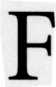

 ashions change in astrology, as in everything else, and for many years the horary art was out of style. It's easy to understand why. With its emphasis on psychology and humanistic themes, twentieth-century astrology has seen horary as hopelessly fatalistic, rigid, old-fashioned, event-oriented fortune telling.
Those descriptions are true, but times change, and now horary astrology is enjoying a renaissance. What was once fatalistic and event-oriented is now practical and realistic. People who lead hectic lives want down-to-earth, sensible advice about real life problems, but answers to their questions are often hard to find in natal charts. And while psychological counseling has its place, someone who wonders whether to expand a business appreciates a fast and accurate answer.
Horary is the branch of astrology that answers people's questions-which can be anything from, "Will I win the election?" to "Will my son get married this year?" to "Where did I put my diamond ring?" and a thousand other topics. If the question asks when, where, or whether, it's a candidate for horary. The more elusive why is difficult, but in some case horary charts describe background conditions as well.
A horary chart is a horoscope, but instead of representing a person's birth, it symbolizes the birth of a question. A question is "born" when first articulated, that is, when it is asked aloud or in writing, especially if it's asked of another person, such as an astrologer. The question's horoscope is drawn for the day, time, and place of its birth.
There is definitely something spooky about horary charts. Why should the planets' positions at a particular moment describe the answer to a question someone poses at that moment? Natal astrology is hard enough to understand, but horary art goes beyond what our intuition tells us about the workings of planetary cycles. In addition, it completely ignores the concept of free will, which explains its fall from favor.
Perhaps the answer lies in Carl Jung's concept of synchronicity. Jung conjectured that many things are connected by an acausal connecting principle-a connection we cannot see, measure, or understand, but which operates all the time and which explains the coincidences that make our lives interesting. You lose your watch, you wonder where it is, and at 3:45 on a Sunday afternoon you phone your astrologer to say, "It's driving me crazy, I can't find my watch. Where is it? Will I get it back?" Your astrologer draws the chart, phones you back, and says, "Look in an upstairs closet along the northeast wall close to the floor"-and there it is.
Why did you wait until that particular moment to ask the question? Horary artists would say that you waited until the arrangement of signs, luminaries, and planets coincided with the answer. There are times when specific, pressing, clear questions well out of us, when they demand to be asked. We probably are, at those moments, responding to something far beyond us; we are probably manifesting Dr. Jung's theory.
Anthony Louis has spent many years studying these connections, and he brings to the art of horary a refreshing blend of skeptic, scholar, and experimentalist. He has taken the time to study authorities from long ago, when horary astrology flourished, and from today, and his experiments have tested his theories in real life.
His findings make very interesting reading. This is an exciting time in the history of horary astrology, for there are many approaches to the subject, and they differ wildly in theory and practice. We students of horary face bewildering choices. In addition to studying modern authors such as the late Barbara Watters and Ivy Goldstein-Jacobson, who are easily the most influential and widely read American authorities of recent years, we can now study the works of William Lilly, the subject's grand master, to whose writings we have recently gained access. Some of us have turned to the seventeenth century and accepted Lilly as our final authority, while others branch out in futuristic directions. Anthony Louis balances the old and the new while adding his own observations.
Any horary book worth its while brings theory to life with examples, and this book is no exception. Every question has its story, and the stories are often dramatic.
No matter what your approach to horary, whether modern or ancient or something in between, there is much to study, ponder, and test-and we are all the richer for it.
-Carol Wiggers, Q.H.P.
Issaquah, WA